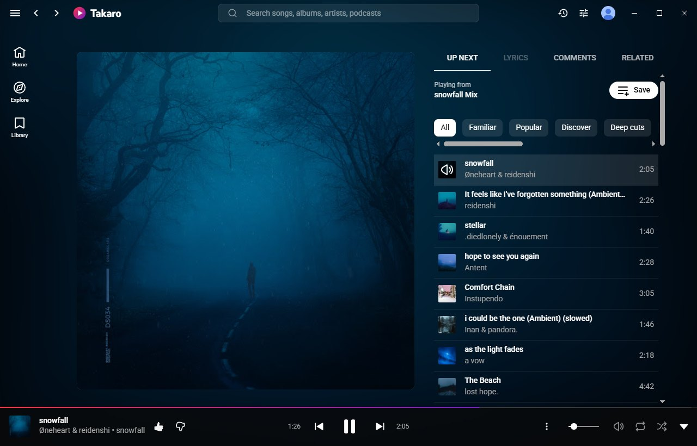

A player that feels native
The cover art of the current song fills the window behind the player, with an optional frosted-glass blur, a gradient progress bar, cleaner menus and a frameless window with its own title bar.
A fast, lightweight player for the real YouTube Music. Simple, clean and made for your desktop.
The full YouTube Music you already use, without a heavy browser runtime on top.
The cover art of the current song fills the window behind the player, with an optional frosted-glass blur, a gradient progress bar, cleaner menus and a frameless window with its own title bar.
Built with Tauri and the WebView2 already in Windows. No bundled Chromium, no Electron.
Create a room and send the code or a tak://jam link: everyone hears the same song at the same moment, each in their own YouTube Music with their own volume. A shared queue shows who added each song, and the host decides whether guests only listen, add songs, or can also play, pause and skip.
Learn moreA small always-on-top window with the cover and the controls, a sleep timer in the ⋮ menu, and Last.fm scrobbling once you connect your account.
It's the official YouTube Music web player: sign in and get your playlists, likes, mixes and lyrics.
Time-synced lyrics from Better Lyrics and LRCLIB, following the song line by line. Click a line to jump to it.
SponsorBlock, precise volume, playback speed, page scaling and more. Turn each one on or off in the Takaro panel.
tak:// links open a song straight in Takaro, and a local OBS overlay shows what’s playing on stream.
Learn moreCover art, a live progress bar and buttons for your friends. When you pause, your status stays and shows it.
Learn moreMIT licensed. Read the code, open an issue, add a plugin or a translation.
See the codeThe cover art behind everything, a clean player bar and your queue at hand.

Optional: show what you’re playing on your Discord profile. This is how your friends see it.
Listening to Takaro
Midnight Static
Neon Harbor
Lattice
⏸ Paused · 01:23 / 03:41
Open the Takaro panel from the top bar of YouTube Music to configure them.
Skips intros, outros and non-music parts of music videos using the SponsorBlock database.
Jumps to the next track when you dislike one.
Opens the app without blasting music. Starts the first song paused.
Reopens the song, playlist or mix you were listening to, right where it stopped.
Mouse wheel over the player bar and arrow keys, 1% steps, a small indicator above the slider, and your volume remembered.
From 0.25× to 2×, right in the player's ⋮ menu.
Pick the stream quality from a button on the player.
Show the music video, only the cover art, or hide the player entirely.
The current cover art, blurred, as the backdrop behind the player.
Line-by-line lyrics in the Lyrics tab from Better Lyrics and LRCLIB.
Closes YouTube Music’s pop-up notifications after a few seconds.
Lower CPU use with CPU Tamer.
Removes YouTube Music's ads with uBlock Origin's filter lists, updated daily. Not needed with YouTube Premium.
Songs fade in and out instead of cutting, and quiet songs are brought up to the same loudness as the rest.
In the player's ⋮ menu: pause after 15 min to 2 h, or at the end of the song, with a fade-out.
Customize the bar at the bottom of the window.
Plugins are ported from pear-desktop (MIT); player design ideas from ytmdesktop2 (CC0).
Install extensions from the Chrome Web Store or Edge Add-ons right inside Takaro.
In Takaro settings, open the Extensions tab and pick Chrome Web Store or Edge Add-ons.
On any extension page, use the "Install in Takaro" box in the corner.
Reload Takaro to use it. Turn extensions on or off, open their options or remove them in the same tab.
Extensions that change pages (blockers, themes, tweaks) work best. Toolbar popups aren't available, and some Chrome APIs aren't supported.
One portable .exe. No installer, no account besides your own YouTube one.
The .exe isn't code-signed yet, so Windows SmartScreen may warn you. Click "More info" → "Run anyway".
No. Takaro is an independent open-source project and is not affiliated with Google, YouTube or Discord.
No. Takaro is a music player first; Discord is only needed for the Rich Presence card, which connects automatically when Discord opens.
Your YouTube login and settings stay on your computer, in Takaro's data folder (com.takaro.player). Takaro collects nothing. Only Jam uses a server, and only while you're in a room: it gets the song (id, title, artist, cover), where it is and the name you chose, never your account.
Yes. Takaro runs on Windows, macOS (Intel and Apple Silicon) and Linux. Browser extensions are Windows-only; the built-in ad blocker works on all three.
Copy an existing JSON file, translate the values and open a pull request. The README explains where the files are, for both the app and this site.
Everyone plays the song in their own Takaro, with their own YouTube account, so nothing is streamed between you. The room only shares which song is playing and where; each guest's player follows the host's. Anyone with the room code or link can join while the room is open.